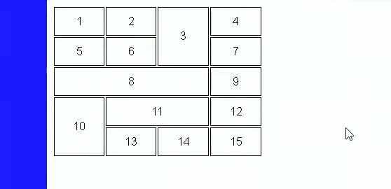
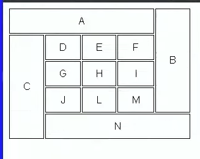
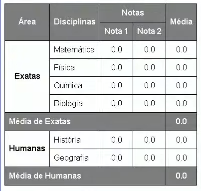

| Nome | Sobrenome | Idade | Profissao | Genero |
|---|---|---|---|---|
| Data 1 | Data 2 | Data 3 | Data 4 | Data 5 |
| Data 1 | Data 2 | Data 3 | Data 4 | Data 5 |
| Data 1 | Data 2 | Data 3 | Data 4 | Data 5 |
| Data 2 | Data 3 | Data 4 | Data 5 | Total | data 1 |
Estrutura
Uma tabela e dividida em 4 partes:
Caption
a tag caption define um titulo semantico para a tabela.
thead
com a tag thead e possivel de forma semantica informar o cabecalho da tabela ao navegador.
tbody
e na tag tbody que todos os dados da tabela devem ficar.
tfoot
o rodape da tabela fica dentro da tag tfoot.
Extra
tabelas tambem podem ter um escopo com a tag scope, não gera nenhuma diferença visual mas pode ser usado por screen readers. define se um th é um header the uma column, row or grounps of columns and rows.
Efeito zebrado
Esse efeito foi criado usando a pseudo-class nth-child even. pode ser usados outros valores.
posição do header
Definindo a table com posição relativa, e a thead > tr > th to sticky fara com que o cabeçãlho mova-se para baixo em tabelas grandes.
Mesclagem de celulas
celulas podem ser mescladas com os parametros rowspan e colspan.
Desafio do gustavo guanabara para o curso em video
O gustavo guanabara do curso em video desafiou os seus alunos do curso em video a recriar as tabelas das imagens a seguir.
Primeira imagem:

Segunda imagem:

Eu irei tentar reproduzir as tabelas das imagens acima nesta pagina usando html e css.
Reprodução
as duas tabelas acima serão recriadas usando html e css.
Tabelas:
| 1 | 2 | 3 | 4 |
| 5 | 6 | 7 | |
| 8 | 9 | ||
| 10 | 11 | 12 | |
| 13 | 14 | 15 | |
A primeira tabela possui dados numericos, 4 colunas e 4 linhas, algumas colunas e linhas oculpam mais que uma celula na tabela.
| A | B | |||
| C | D | E | F | |
| G | H | I | ||
| J | L | M | ||
| N | ||||
A segunda tabela possui letras como dados das celulas, 5 colunas e 5 linhas, algumas linhas e colunas oculpam mais que 1 celula na tabela.
Desafio do gustavo guanabara para o capitulo 21 completado com sucesso segue o proximo desafio abaixo.
Segundo desafio do guanabara
Este desafio mostra uma tabela com notas para materias nas areas de exatas e humanas, abaixo estará a imagem da tabela e logo apos a reprodução da mesma usando html e css.
Foto da tabela

Reprodução da tabela em html e css
| Área | Disciplinas | Notas | Média | |
|---|---|---|---|---|
| Nota 1 | Nota 2 | |||
| Exatas | Matemática | 0.0 | 0.0 | 0.0 |
| Fisica | 0.0 | 0.0 | 0.0 | |
| Quimica | 0.0 | 0.0 | 0.0 | |
| Biologia | 0.0 | 0.0 | 0.0 | |
| Média de Exatas | 0.0 | |||
| Humanas | Historia | 0.0 | 0.0 | 0.0 |
| Geografia | 0.0 | 0.0 | 0.0 | |
| Média de Humanas | 0.0 | |||
Aparentemente tudo correto com o visual da tabela, porem não tenho certeza se o scope foi feito corretamente. De qualquer forma o desafio foi concluido por Emanuel Costa.